EAE1317 — Economia do Meio Ambiente e dos Recursos Naturais
2026-09-24
Dois apartamentos, mesma metragem, mesmo número de quartos, mesmo andar. Um fica a 500 metros de um parque e custa 15% mais caro que o outro. O que esses 15% medem?
(a) A disposição a pagar pelo parque de quem comprou o apartamento perto dele.
(b) A disposição a pagar média da cidade pelo parque.
(c) Nada em particular: bairros com parque costumam ser melhores em tudo, e os 15% podem ser as outras coisas.
Referência: Phaneuf e Requate, caps. 14 e 15
Referência: Phaneuf e Requate, caps. 15 e 18
1. Complementares. O valor da praia aparece no gasto com a viagem.
2. Substitutos. O valor do ar aparece no gasto com o purificador.
3. Diferenciados. O valor do ar aparece dentro do preço do apartamento, que já tem mercado.
4. E daí o problema é outro: separar o que é o ar do que é o bairro.
Estudaremos agora o caso em que o bem ambiental afeta o preço do bem privado.
Exemplo 1: mercado imobiliário.
Exemplo 2: salário.
A diferença deste caso com os dois anteriores é que, agora, o consumidor está comprando (indiretamente) o bem ambiental.
No que segue, trataremos de um modelo teórico para fundamentar o modelo empírico de preços hedônicos.
Preço por metro quadrado (valor venal) em 2019 e distância ao Ibirapuera.
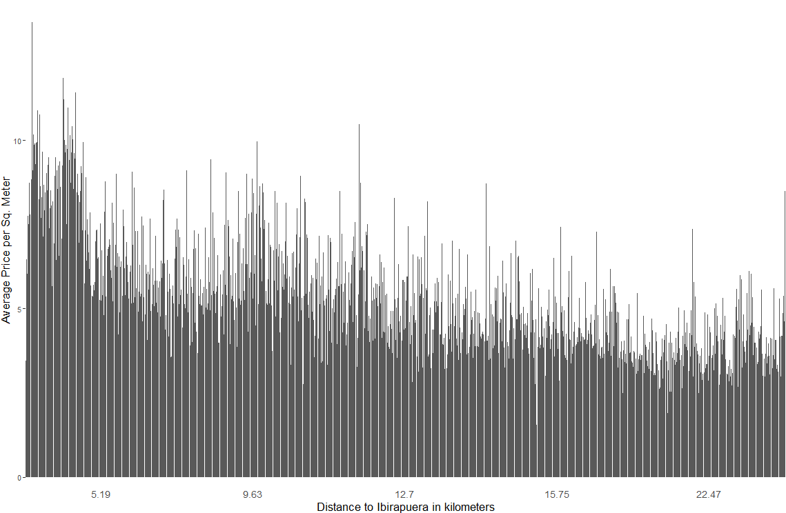
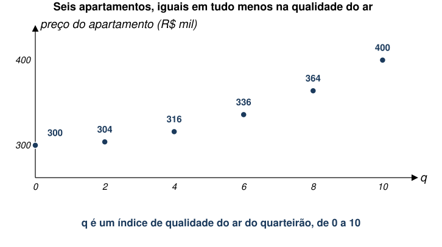
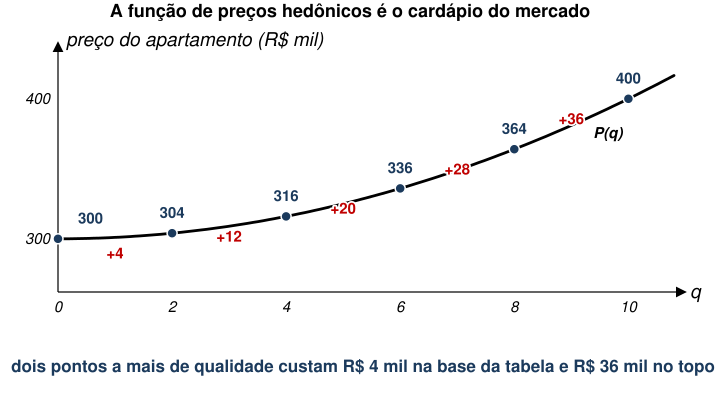
Se \(P(q)\) fosse uma demanda inversa por qualidade do ar, ela estaria dizendo que as pessoas pagam mais por unidade quanto mais ar limpo já têm. Isso contraria tudo o que este curso fez desde a aula 02.
O que ela tem de útil é a inclinação no ponto que alguém escolheu.
A padaria cobra R$ 6 pelo café pequeno, R$ 8 pelo médio e R$ 11 pelo grande. Você pede o médio.
\[\max_{x,q,z} U(x,q,z,s) \text{ s.a. } y=P\left(x,q\right)+z\]
\[\frac{\partial U\left(x,q,z,s\right)}{\partial {x}_{j}}=\lambda \frac{\partial P\left(x,q\right)}{\partial {x}_{j}} \qquad \frac{\partial U\left(x,q,z,s\right)}{\partial q}=\lambda \frac{\partial P\left(x,q\right)}{\partial q} \qquad \frac{\partial U\left(x,q,z,s\right)}{\partial z}=\lambda\]
\[\frac{\partial U\left(x,q,z,s\right)/\partial q}{\partial U\left(x,q,z,s\right)/\partial z} = \frac{\partial P\left(x,q\right)}{\partial q}\]
À esquerda, a disposição marginal a pagar por \(q\). À direita, o preço marginal implícito de \(q\).
\[\overline{u}=U(x,q,y-b,s)\]
\[y-b={U}^{-1}(x,q,\overline{u},s)\]
\[b\left(x,q,y,s,\overline{u}\right)=y-{U}^{-1}(x,q,\overline{u},s)\]
\[0=\frac{\partial U}{\partial q}-\frac{\partial U}{\partial z}\frac{\partial b}{\partial q}\]
(Lembrando que \(z=y-b\).)
\[\frac{\partial U/\partial q}{\partial U/\partial z} = \frac{\partial b\left(x,q,y,s,\overline{u}\right)}{\partial q} = \frac{\partial P}{\partial q}\]
Ou seja, conseguimos estimar a disposição marginal a pagar por \(q\) para um nível de referência fixo de utilidade \(\overline{u}\).
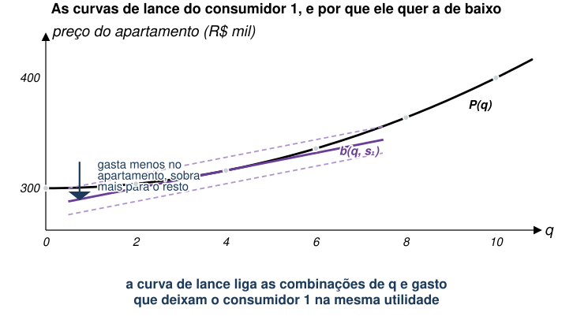
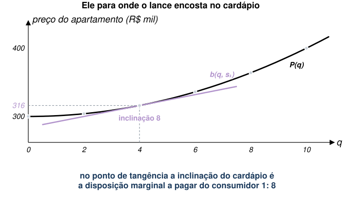
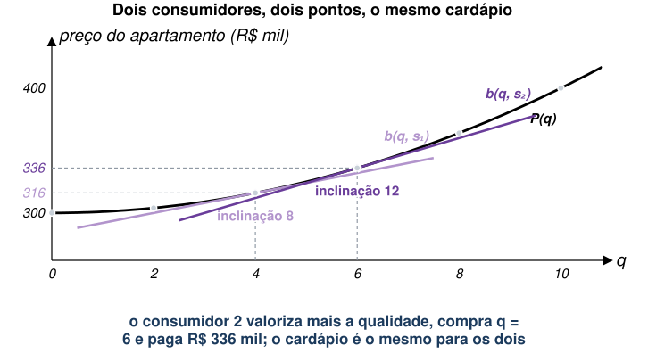
\[\max_{x,q} \Pi =P\left(x,q\right)-C(x,q,v)\]
\[\overline{\Pi }=\theta -C(x,q,v)\]
\[\frac{\partial \theta \left(x,q,v,\overline{\Pi }\right)}{\partial q}=\frac{\partial P}{\partial q}=\frac{\partial C}{\partial q}\]
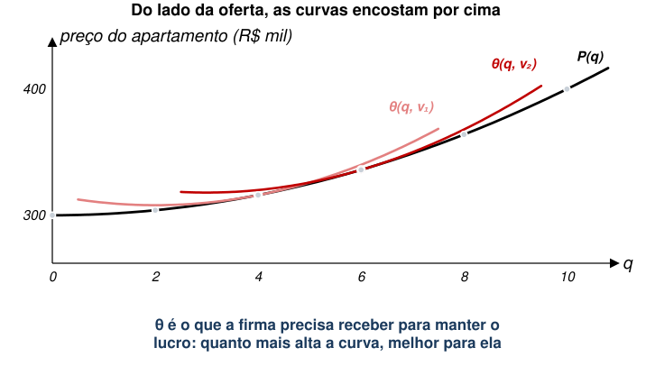
\[\frac{\partial b\left(x,q,y,{s}_{1},{u}^{0}\right)}{\partial q}=\frac{\partial \theta \left(x,q,{v}_{1},{\Pi }^{0} \right)}{\partial q}\]
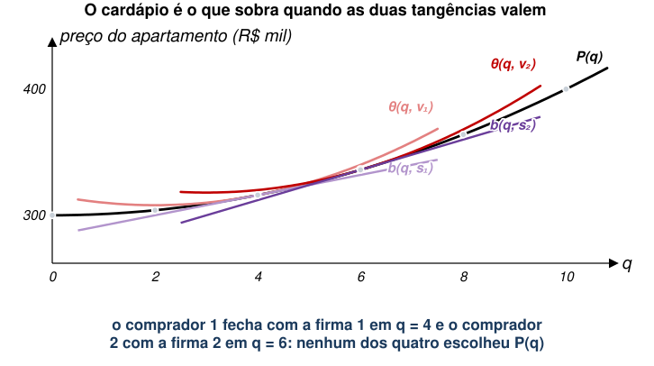
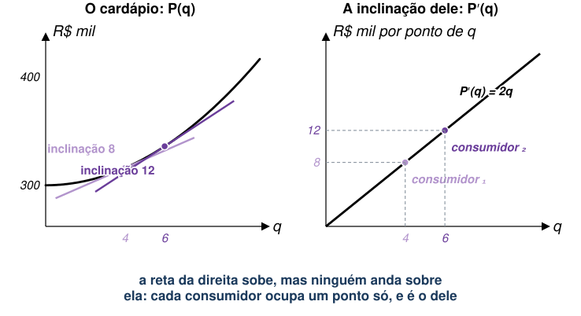
\[MWTP=\frac{\partial P\left(x,q\right)}{\partial q}\]
\[{p}_{i}=f\left({X}_{i},{q}_{i},{\varepsilon }_{i},\beta \right)={\beta }_{0}+\sum_{j=1}^{J} {\beta }_{j}{x}_{j}+\alpha {q}_{i}+{\varepsilon }_{i}\]
\[\alpha =\frac{\partial p}{\partial q}\]
\[{\hat{p}}_{i}={\hat{\beta }}_{0}+\sum_{j=1}^{J} {\hat{\beta }}_{j}{x}_{j}+\hat{\alpha }{q}_{i}\]
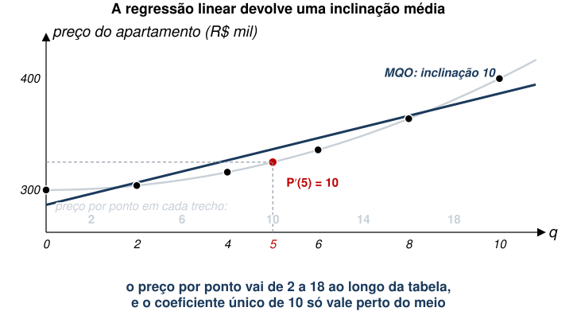
| problema | como se ataca | |
|---|---|---|
| Interpretação | \(\hat{\alpha }\) é o preço implícito no ponto médio, e não a demanda por \(q\) | reconhecer que a medida é local e não extrapolar |
| Identificação | o que está no \(\varepsilon\) pode andar junto com \(q\) | achar variação em \(q\) que seja quase aleatória |
(Ramírez-Juidías et al. 2022) estudam disposição a pagar para morar próximo a áreas verdes em Sevilha.
(Sen Chakraborty et al. 2023) analisam o valor de estruturas para conter erosão do solo, na Nigéria.
Repare que o preço implícito varia com o contexto. É exatamente o que a figura do cardápio previa: a inclinação não é um número só.
(Greenstone e Gallagher 2008) estudam disposição a pagar por morar perto de locais de descarte de lixo tóxico.
É a estimativa que o modelo desta aula manda fazer, feita com cuidado. Ela parece resolver a questão.
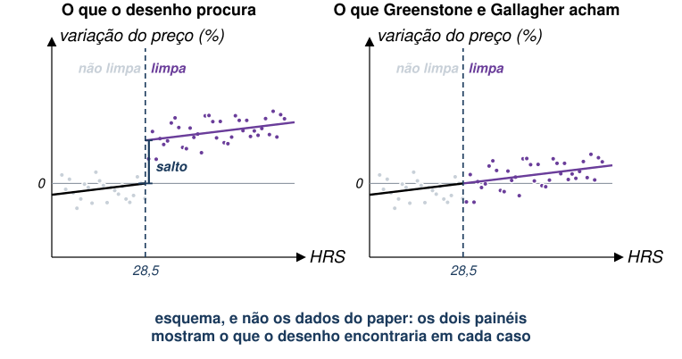
Os seis apartamentos do começo da aula, com o preço em R$ mil. Quatro compradores, cada um valorizando cada ponto de qualidade do ar em \(s\) mil reais, sempre o mesmo valor.
| \(q\) | 0 | 2 | 4 | 6 | 8 | 10 |
|---|---|---|---|---|---|---|
| Preço | 300 | 304 | 316 | 336 | 364 | 400 |
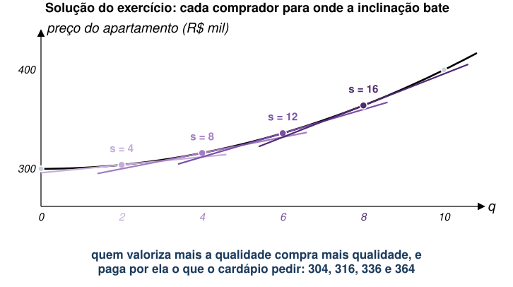
| comprador | \(s\) | compra \(q\) | paga | \(P′(q)\) no ponto dele |
|---|---|---|---|---|
| 1 | 4 | 2 | 304 | 4 |
| 2 | 8 | 4 | 316 | 8 |
| 3 | 12 | 6 | 336 | 12 |
| 4 | 16 | 8 | 364 | 16 |
| MQO | 10 |
O apartamento perto do parque custa 15% mais. O que esses 15% medem?
Se a proximidade do parque fosse a única coisa diferente entre os dois imóveis, a resposta seria (a): a disposição marginal a pagar de quem escolheu morar ali.
Nunca seria (b): a média da cidade exigiria conhecer as curvas de lance de todo mundo, e a regressão só entrega tangências.
Na prática, quase sempre é (c) em parte, e o resto da aula foi sobre como saber quanto.
EAE1317 — Economia do Meio Ambiente e dos Recursos Naturais